Jump seq data analysis
Shengtong Han
YYYY-MM-DD
Last updated: 2017-04-28
Code version: 4df23c8
All samples are here: 48 ng (11); 24 ng (5); 12 ng (5); 6ng (5); 2.4 ng (5); 0.6ng (2).
48ng 5hmC replicates
Summary
There are eleven 48ng 5hmC replicates and each one has two strands, plus+minus.
| rep | 1 | 2 | 3 | 4 | 5 | 6 | 7 | 8 | 9 | 10 | 11 |
|---|---|---|---|---|---|---|---|---|---|---|---|
| #reads(plus) | 3,516,149 | 3,781,024 | 2,014,714 | 6,982,592 | 4,741,743 | 5,036,004 | 5,825,862 | 5,532,109 | 5,072,780 | 3,951,163 | 3,641,213 |
| #reads(minus) | 3,524,627 | 3,793,291 | 2,021,689 | 6,995,038 | 4,754,910 | 5,048,479 | 5,834,324 | 5,546,279 | 5,059,828 | 3,935,679 | 3,631,379 |
Two large combined replicates from eleven 48 ng 5hmC replicates
Once the base level coverage of each individual replicates is obtained, directly combine some of them to form a synthesized large replicate and the rest form to another such that their coverage, i.e. number of reads are as balanced as possible. In this way, power is expected to be increasing.
- combined rep 1: rep 4+5+6+7+8
- combined rep 2:rep 1+2+3+9+10+11
| Two large combined replicates | #reads |
|---|---|
| rep1.minus | 28,179,030 |
| rep1.plus | 28,118,310 |
| rep2.minus | 21,966,493 |
| rep2.plus | 21,977,043 |
| rep1+rep2:minus | 50,145,523 |
| rep1+rep2:plus | 50,095,353 |
Comparison 1: Comparison with Dali Han’s data
Dali Han’s peak: 64865 peak windows with varying window size.
Originally called 20 bp windows are extended by 2kbp, 1kbp upstream and 1kbp downstream. Overlapping between extended peak windows (at four p value cutoffs \(10^{-3}, 10^{-7}, 10^{-15}, 10^{-20}\)) and Dali Han’s data (window size differs among each other) are summzried below.
| Combined replicate | #overlap.win | #.win | ratio |
|---|---|---|---|
| rep1.minus.21.bp.enriched.window.p10-3.bed.extend2kbp.bed | 345920 | 1318454 | 0.2623679 |
| rep1.minus.21.bp.enriched.window.p10-7.bed.extend2kbp.bed | 74515 | 236507 | 0.3150647 |
| rep1.minus.21.bp.enriched.window.p10-15.bed.extend2kbp.bed | 9191 | 27656 | 0.3323329 |
| rep1.minus.21.bp.enriched.window.p10-20.bed.extend2kbp.bed | 3686 | 11162 | 0.3302276 |
| rep1.plus.21.bp.enriched.window.p10-3.bed.extend2kbp.bed | 344905 | 1317670 | 0.2617537 |
| rep1.plus.21.bp.enriched.window.p10-7.bed.extend2kbp.bed | 74504 | 236568 | 0.3149369 |
| rep1.plus.21.bp.enriched.window.p10-15.bed.extend2kbp.bed | 9167 | 27662 | 0.3313932 |
| rep1.plus.21.bp.enriched.window.p10-20.bed.extend2kbp.bed | 3554 | 10997 | 0.3231790 |
| rep2:minus.21.bp.enriched.window.p10-3.bed.extend2kbp.bed | 349863 | 1245093 | 0.2809935 |
| rep2:minus.21.bp.enriched.window.p10-7.bed.extend2kbp.bed | 70615 | 199358 | 0.3542120 |
| rep2:minus.21.bp.enriched.window.p10-15.bed.extend2kbp.bed | 8216 | 21511 | 0.3819441 |
| rep2:minus.21.bp.enriched.window.p10-20.bed.extend2kbp.bed | 2851 | 7710 | 0.3697795 |
| rep2:plus.21.bp.enriched.window.p10-3.bed.extend2kbp.bed | 348193 | 1243355 | 0.2800431 |
| rep2:plus.21.bp.enriched.window.p10-7.bed.extend2kbp.bed | 71014 | 200017 | 0.3550398 |
| rep2:plus.21.bp.enriched.window.p10-15.bed.extend2kbp.bed | 8769 | 22941 | 0.3822414 |
| rep2:plus.21.bp.enriched.window.p10-20.bed.extend2kbp.bed | 2792 | 7557 | 0.3694588 |
rep1.minus=c(0.2624, 0.3151, 0.3323, 0.3302); rep1.plus=c(0.2618, 0.3149, 0.3314, 0.3232)
rep2.minus=c(0.2810, 0.3542, 0.3819, 0.3698); rep2.plus=c(0.2800, 0.3550, 0.3822, 0.3695)
plot(rep1.minus, ylim=c(0.2, 0.4), type="o", xaxt='n', xlab="p value cutoffs", ylab="ratio", col=1, main="Overlapping rate with Dali's peaks")
lines(rep1.plus, col=2, type="o")
lines(rep2.minus, col=3, type="o")
lines(rep2.plus, col=4, type="o")
legend(3, 0.3, c("rep1.minus", "rep1.plus", "rep2.minus", "rep2.plus"), col=c(1,2,3,4), lty=c(1,1,1,1))
axis.labels <-c("10^(-3)", "10^(-7)", "10^(-15)", "10^(-20)")
axis(1, at=seq(1,4), labels=axis.labels)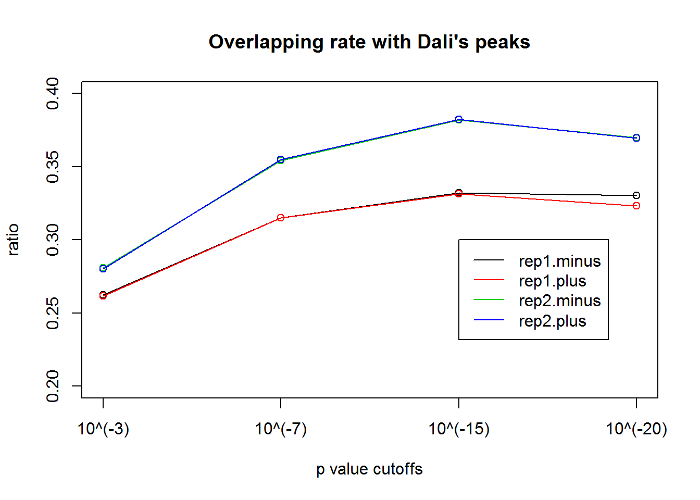 ##### Comparison 2: Comparison between two large replicates
| minus | \(10^{-1}\) | \(10^{-3}\) | \(10^{-5}\) | \(10^{-7}\) | \(10^{-15}\) | \(10^{-20}\) |
|---|---|---|---|---|---|---|
| rep1 | 0.9905 | 0.9388 | 0.8425 | 0.7334 | 0.4543 | 0.4056 |
| rep2 | 0.9886 | 0.9523 | 0.8961 | 0.8091 | 0.5576 | 0.5612 |
| plus | \(10^{-1}\) | \(10^{-3}\) | \(10^{-5}\) | \(10^{-7}\) | \(10^{-15}\) | \(10^{-20}\) |
| rep1 | 0.9906 | 0.9389 | 0.8426 | 0.7337 | 0.4650 | 0.3952 |
| rep2 | 0.9887 | 0.9524 | 0.8967 | 0.8095 | 0.5397 | 0.5419 |
Surprisingly, the overlapping rate deceases as the p value cutofff becomes more stringent.
| minus | 0.5 | 0.1 | 0.01 | 0.001 | 0.0001 | \(10^{-7}\) | \(10^{-10}\) |
|---|---|---|---|---|---|---|---|
| rep1 | 0.3955 | 0.4118 | 0.3840 | 0.3611 | 0.3563 | 0.3148 | 0.3118 |
| rep2 | 0.4985 | 0.3915 | 0.4111 | 0.4109 | 0.4023 | 0.4196 | 0.4231 |
| plus | 0.5 | 0.1 | 0.01 | 0.001 | 0.0001 | \(10^{-7}\) | \(10^{-10}\) |
| rep1 | 0.3954 | 0.4126 | 0.3841 | 0.3627 | 0.3572 | 0.3991 | 0.3115 |
| rep2 | 0.4985 | 0.3907 | 0.4116 | 0.4128 | 0.4030 | 0.4205 | 0.4205 |
Downsample
Combine all 48ng replicates together, downsample \(40\%, 50\%, \cdots, 90\%\) reads, call peak windows, and see how #peak.windows (absolute peak windows or overlapping with other data) vary with number of reads.
samtools merge output.sorted.bam input1.sorted.bam input2.sorted.bam # merge together sorted bam filessamtools view -s 0.25 -b input.all.bam > input_25p.sam # downsample 25% reads | ratio | plus | minus |
|---|---|---|
| 40% | 20,027,749 | 20,070,771 |
| 50% | 25,029,777 | 25,091,279 |
| 60% | 30,035,435 | 30,110,375 |
| 70% | 35,040,232 | 35,127,703 |
| 80% | 40,044,961 | 40,149,113 |
| 90% | 45,048,466 | 45,168,687 |
For each down sample, call base level coverage, call peak windows and count how many peak windows at specified FDR level.
num.win.FDR5per=c(1848560, 2149967, 2635168, 2738080, 3066015, 3458501)
num.reads=c(20070771, 25091279, 30110375, 35127703, 40149113, 45168687)
plot(num.reads, num.win.FDR5per, xlab="Number of reads", ylab="# peak windowsof 20 bp at FDR0.05", type="o", main="minus strands")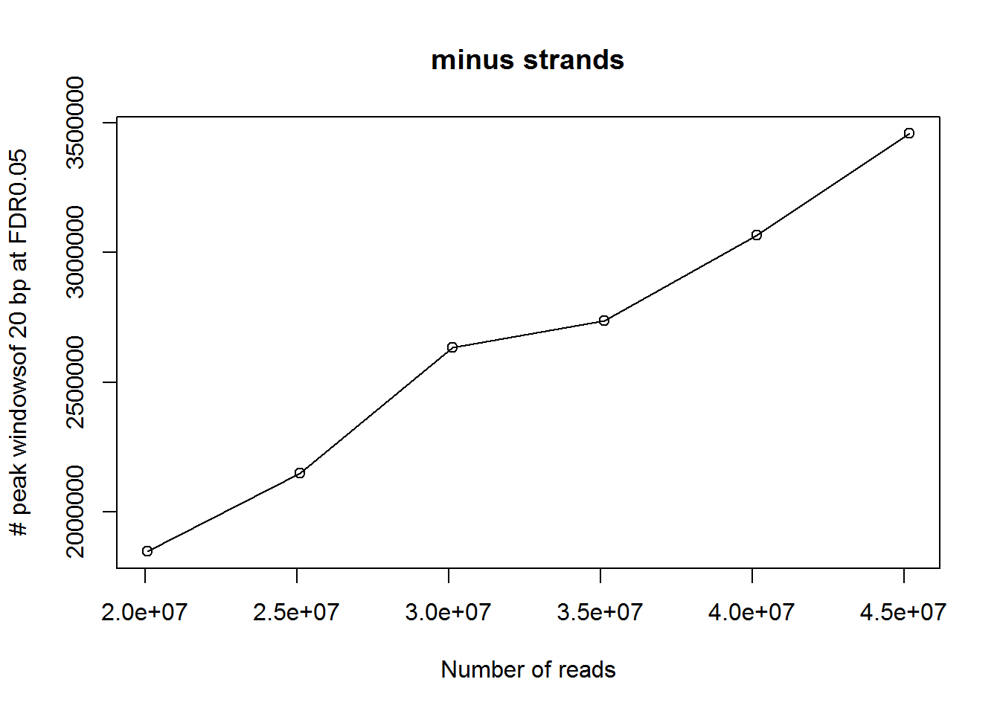
num.win.FDR5per=c(1854249, 2148405, 2632652, 2736153, 3082261, 3456391)
num.reads=c(20027749, 25029777, 30035435, 35040232, 40044961, 45048466)
plot(num.reads, num.win.FDR5per, xlab="Number of reads", ylab="# peak windowsof 20 bp at FDR0.05", type="o", main="plus strands")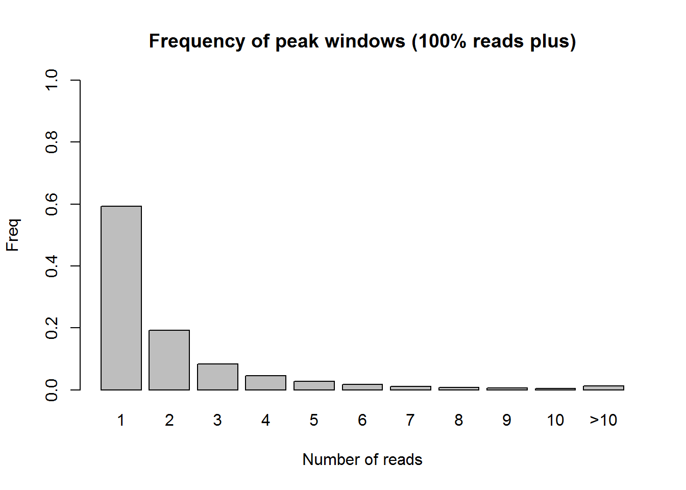
Based on the current observations, the number of peak windows grows as the read coverage increases, it does not show significant plateau.
Comparison with Dali’s Peaks
There are 64865 peak windows of varying size in Dali’s data. With each down sample, call peak windows of 20bp.
jump.rate.minus=c(0.1518, 0.1516, 0.1457, 0.1494, 0.1460, 0.1425)
jump.rate.plus=c(0.1511, 0.1512, 0.1454, 0.1491, 0.1458, 0.1424)
dali.rate.minus=c(0.8715, 0.8866, 0.9001, 0.9039, 0.9102, 0.9156)
dali.rate.plus=c(0.8709, 0.8863, 0.8999, 0.9039, 0.9095, 0.9153)
plot(jump.rate.minus, ylim=c(0, 1), type="o", xaxt='n', xlab="number of reads", ylab="overlapping rate", col=1, main="Overlapping rate of peak windows of 20 bp (FDR0.05) with Dali's peaks", cex=0.8)
lines(jump.rate.plus, col=2, type="o")
lines(dali.rate.minus, col=3, type="o")
lines(dali.rate.plus, col=4, type="o")
legend(1, 0.6, c("jump.rate.minus", "jump.rate.plus", "dali.rate.minus", "dali.rate.plus"), col=c(1,2,3,4), lty=c(1,1,1,1))
axis.labels <-c("40% reads", "50% reads", "60% reads", "70% reads", "80% reads", "90% reads")
axis(1, at=seq(1,6), labels=axis.labels)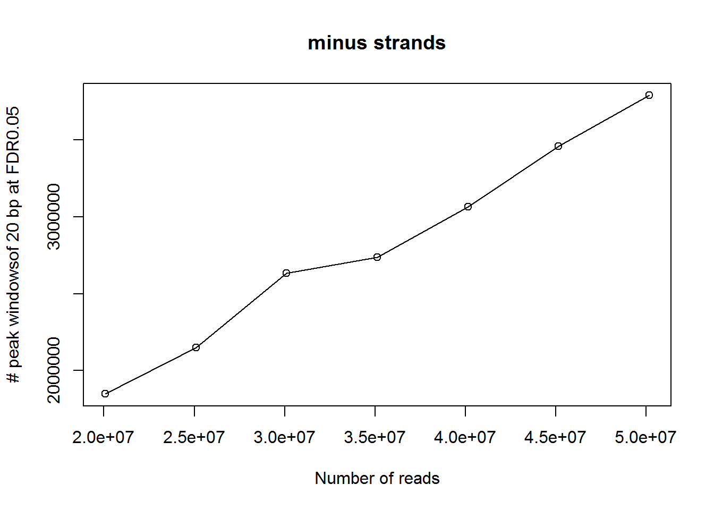 jump.rate.: the ratio of windows overlapping with Dali’s peaks from all called peaks windows. dali.rate.: among of all Dali’s peaks, the ratio of windows overlapping with our called peak windows.
Cmparison with strong TAB-seq peaks
There are 2,057,636 strong base level peaks from TAB-seq. To compute overlapping rate, each base is extend by 1bp downstream, 1bp upstream.
jump.rate.minus=c(0.1997, 0.1994, 0.1888, 0.1945, 0.1887, 0.1821)
jump.rate.plus=c(0.1994, 0.1996, 0.1890, 0.1946, 0.1885, 0.1820)
dali.rate.minus=c(0.2163, 0.2505, 0.2891, 0.3091, 0.3350, 0.3633)
dali.rate.plus=c(0.2164, 0.2503, 0.2889, 0.3089, 0.3361, 0.3628)
plot(jump.rate.minus, ylim=c(0, 1), type="o", xaxt='n', xlab="number of reads", ylab="overlapping rate", col=1, main="Overlapping rate of peak windows (20bp,FDR0.05) with strong TAB-seq peaks", cex=0.5)
lines(jump.rate.plus, col=2, type="o")
lines(dali.rate.minus, col=3, type="o")
lines(dali.rate.plus, col=4, type="o")
legend(1, 0.8, c("jump.rate.minus", "jump.rate.plus", "StrongTAB.rate.minus", "StrongTAB.rate.plus"), col=c(1,2,3,4), lty=c(1,1,1,1))
axis.labels <-c("40% reads", "50% reads", "60% reads", "70% reads", "80% reads", "90% reads")
axis(1, at=seq(1,6), labels=axis.labels)
24ng 5hmC replicate
12ng 5hmC replicate
There are 5 12ng 5hmC replicates.
| rep | plus | minus |
|---|---|---|
| rep 1 | 1,538,440 | 1,543,973 |
| rep 2 | 2,817,848 | 2,829,593 |
| rep 3 | 1,805,014 | 1,813,743 |
| rep 4 | 1,962,631 | 1,976,519 |
| rep 5 | 1,365,146 | 1,375,074 |
win.minus=c(1144297, 1008422, 1436959, 1197291)
win.plus=c(1312102, 1036507, 1441863, 1200396)
plot(win.minus, type="o", xaxt='n', xlab="replicates", ylab="Number of peak windows", col=1, main="Number of peak windows (20bp, FDR0.05)", cex=0.8)
lines(win.plus, col=2, type="o")
legend(1, 1420000, c("minus strand", "plus strand"), col=c(1,2), lty=c(1,1))
axis.labels <-c("rep1 ", "rep2", "rep3", "rep5")
axis(1, at=seq(1,4), labels=axis.labels)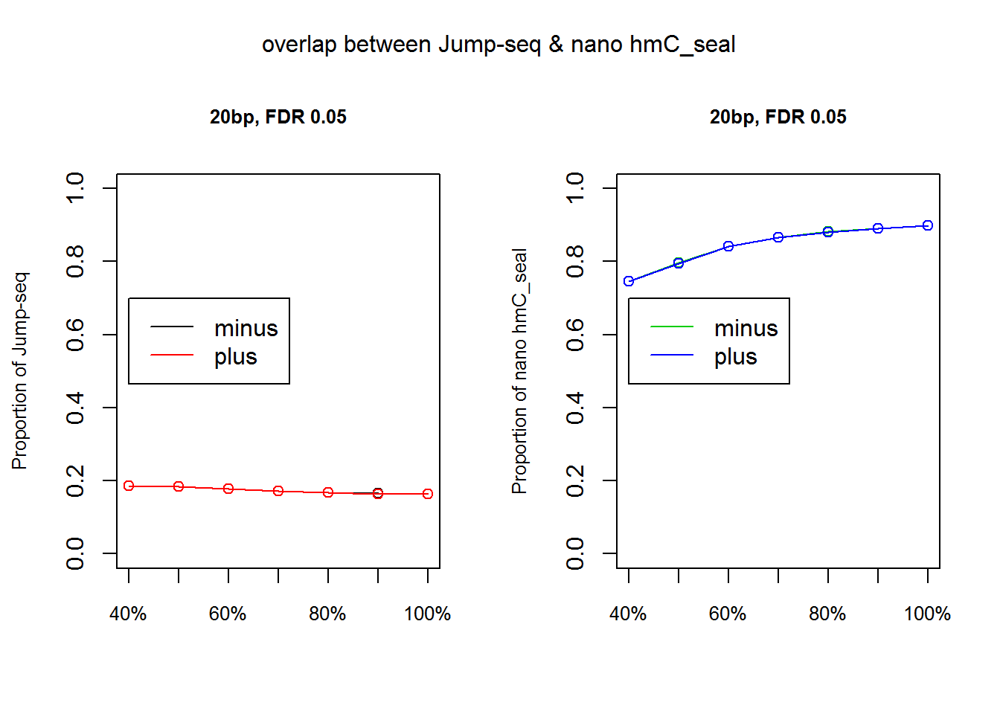
Comparison with Dali’s peaks
jump.rate.minus=c(0.0876, 0.0665, 0.0734, 0.0933)
jump.rate.plus=c(0.0858, 0.0672, 0.0734, 0.0938)
dali.rate.minus=c(0.6385, 0.5558, 0.6989, 0.7158)
dali.rate.plus=c(0.7222, 0.5711, 0.7026, 0.7202)
plot(jump.rate.minus, ylim=c(0, 1), type="o", xaxt='n', xlab="number of reads", ylab="overlapping rate", col=1, main="Overlapping rate of peak windows of 20 bp (FDR0.05) with Dali's peaks", cex=0.8)
lines(jump.rate.plus, col=2, type="o")
lines(dali.rate.minus, col=3, type="o")
lines(dali.rate.plus, col=4, type="o")
legend(1, 0.5, c("jump.rate.minus", "jump.rate.plus", "dali.rate.minus", "dali.rate.plus"), col=c(1,2,3,4), lty=c(1,1,1,1))
axis.labels <-c("40% reads", "50% reads", "60% reads", "70% reads", "80% reads", "90% reads")
axis(1, at=seq(1,6), labels=axis.labels)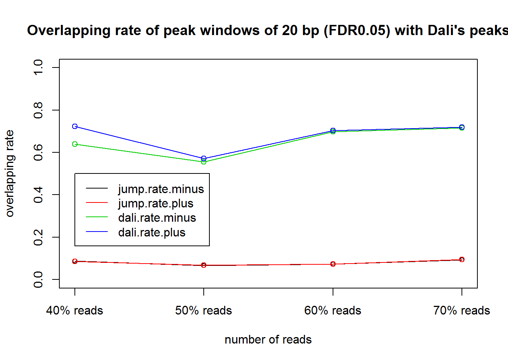
6ng 5hmC replicate
2.4ng 5hmC replicate
| rep | plus | minus |
|---|---|---|
| rep 1 | 270,885 | 272,807 |
| rep 2 | ||
| rep 3 | 279,404 | 281,109 |
| rep 4 | 213,739 | 215,604 |
win.plus1=c(219862, 224538, 179974) # FDR0.5
win.minus1=c(219604, 130238, 179240)
win.plus2=c(1467, 1341, 1306) # FDR0.05
win.minus2=c(1395, 1661, 1325)
plot(win.plus2, ylim=c(1000, 230000), type="o", xaxt='n', xlab="replicates", ylab="# windows of 1kb", col=1, main="Number of peak windows", cex=0.5)
lines(win.minus2, col=2, type="o")
lines(win.plus1, col=3, type="o")
lines(win.minus1, col=4, type="o")
legend(1, 100000, c("plus_FDR0.05", "minus_FDR0.05", "plus_FDR0.5", "minus_FDR0.5"), col=c(1,2,3,4), lty=c(1,1,1,1))
axis.labels <-c("rep 1", "rep3", "rep4")
axis(1, at=seq(1,3), labels=axis.labels)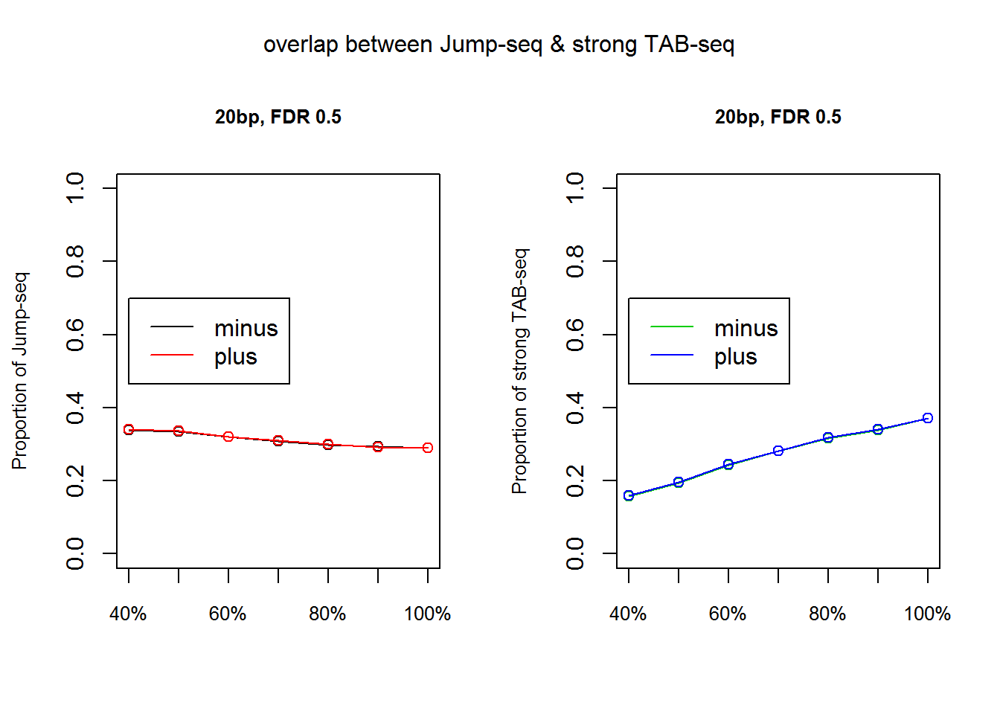
Comparison with Dali’s peaks
win.plus1=c(0.1014, 0.0977, 0.0997) # FDR0.5
win.minus1=c(0.1025, 0.0982, 0.1003)
win.plus2=c(0.2420, 0.1909, 0.2580) # FDR0.05
win.minus2=c(0.2165, 0.2011, 0.2566)
plot(win.plus2, ylim=c(0, 0.6), type="o", xaxt='n', xlab="replicates", ylab="ratio", col=1, main="Ratio of called peak windows of 1kb overlapping with Dali's data", cex=0.5)
lines(win.minus2, col=2, type="o")
lines(win.plus1, col=3, type="o")
lines(win.minus1, col=4, type="o")
legend(1, 0.6, c("plus_FDR0.05", "minus_FDR0.05", "plus_FDR0.5", "minus_FDR0.5"), col=c(1,2,3,4), lty=c(1,1,1,1))
axis.labels <-c("rep 1", "rep3", "rep4")
axis(1, at=seq(1,3), labels=axis.labels)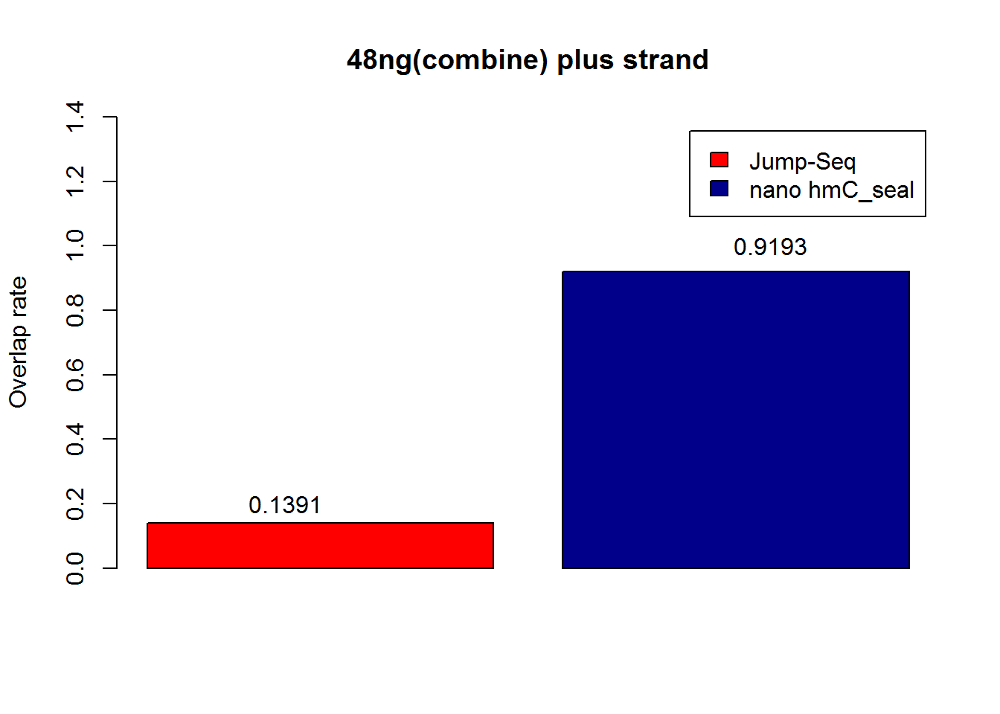
win.plus1=c(0.3231, 0.3189, 0.2662) # FDR0.5
win.minus1=c(0.3264, 0.3205, 0.2694)
win.plus2=c(0.0058, 0.0041, 0.0056) # FDR0.05
win.minus2=c(0.0048, 0.0054, 0.0056)
plot(win.plus2, ylim=c(0, 0.6), type="o", xaxt='n', xlab="replicates", ylab="ratio", col=1, main="Ratio of Dali's peaks overlapping with called peaks", cex=0.5)
lines(win.minus2, col=2, type="o")
lines(win.plus1, col=3, type="o")
lines(win.minus1, col=4, type="o")
legend(1, 0.6, c("plus_FDR0.05", "minus_FDR0.05", "plus_FDR0.5", "minus_FDR0.5"), col=c(1,2,3,4), lty=c(1,1,1,1))
axis.labels <-c("rep 1", "rep3", "rep4")
axis(1, at=seq(1,3), labels=axis.labels)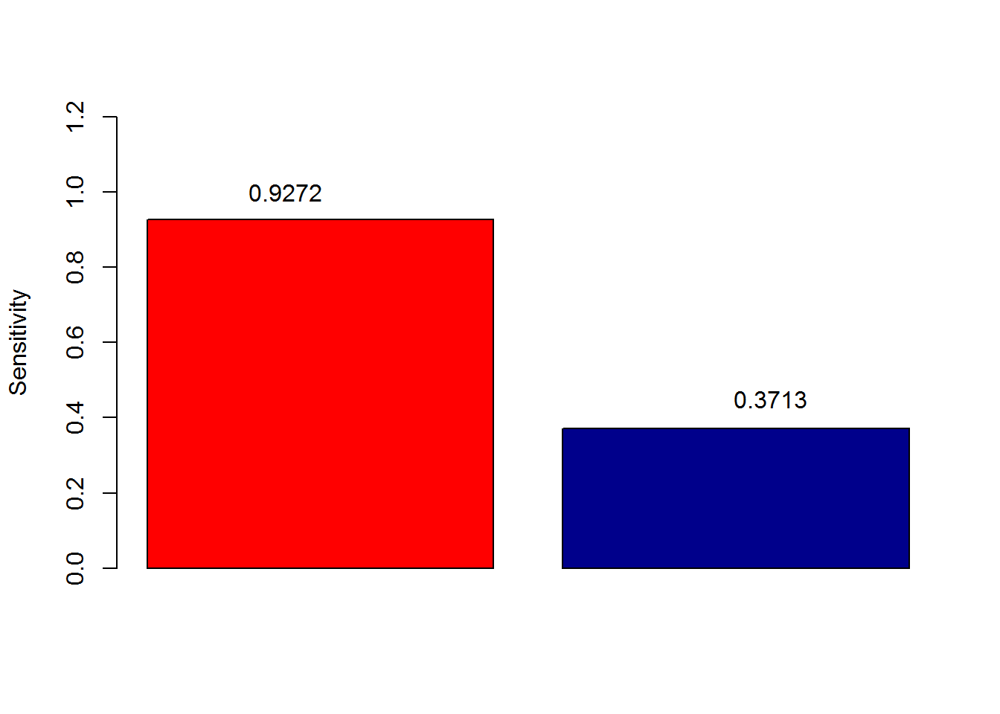
Comparison with strong TAB-seq
win.plus1=c(0.5894, 0.5836, 0.5780) # FDR0.5
win.minus1=c(0.5884, 0.5828, 0.5767)
win.plus2=c(0.8064, 0.7845, 0.7910) # FDR0.05
win.minus2=c(0.7914, 0.7628, 0.7887)
plot(win.plus2, ylim=c(0, 1), type="o", xaxt='n', xlab="replicates", ylab="ratio", col=1, main="Ratio of called peak windows of 1kb overlapping with strongTAB-seq", cex=0.5)
lines(win.minus2, col=2, type="o")
lines(win.plus1, col=3, type="o")
lines(win.minus1, col=4, type="o")
legend(1, 0.5, c("plus_FDR0.05", "minus_FDR0.05", "plus_FDR0.5", "minus_FDR0.5"), col=c(1,2,3,4), lty=c(1,1,1,1))
axis.labels <-c("rep 1", "rep3", "rep4")
axis(1, at=seq(1,3), labels=axis.labels)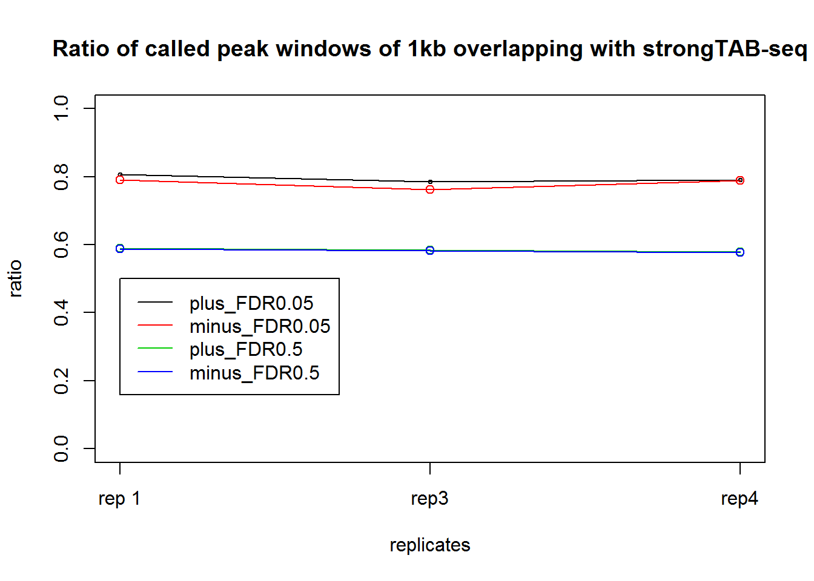
win.plus1=c(0.1835, 0.1832, 0.1460) # FDR0.5
win.minus1=c(0.1827, 0.1826, 0.1468)
win.plus2=c(0.0025, 0.0021, 0.0023) # FDR0.05
win.minus2=c(0.0021, 0.0024, 0.0021)
plot(win.plus2, ylim=c(0, 0.4), type="o", xaxt='n', xlab="replicates", ylab="ratio", col=1, main="Ratio of strongTAB-seq overlapping with called peaks of 1kb", cex=0.5)
lines(win.minus2, col=2, type="o")
lines(win.plus1, col=3, type="o")
lines(win.minus1, col=4, type="o")
legend(1, 0.4, c("plus_FDR0.05", "minus_FDR0.05", "plus_FDR0.5", "minus_FDR0.5"), col=c(1,2,3,4), lty=c(1,1,1,1))
axis.labels <-c("rep 1", "rep3", "rep4")
axis(1, at=seq(1,3), labels=axis.labels)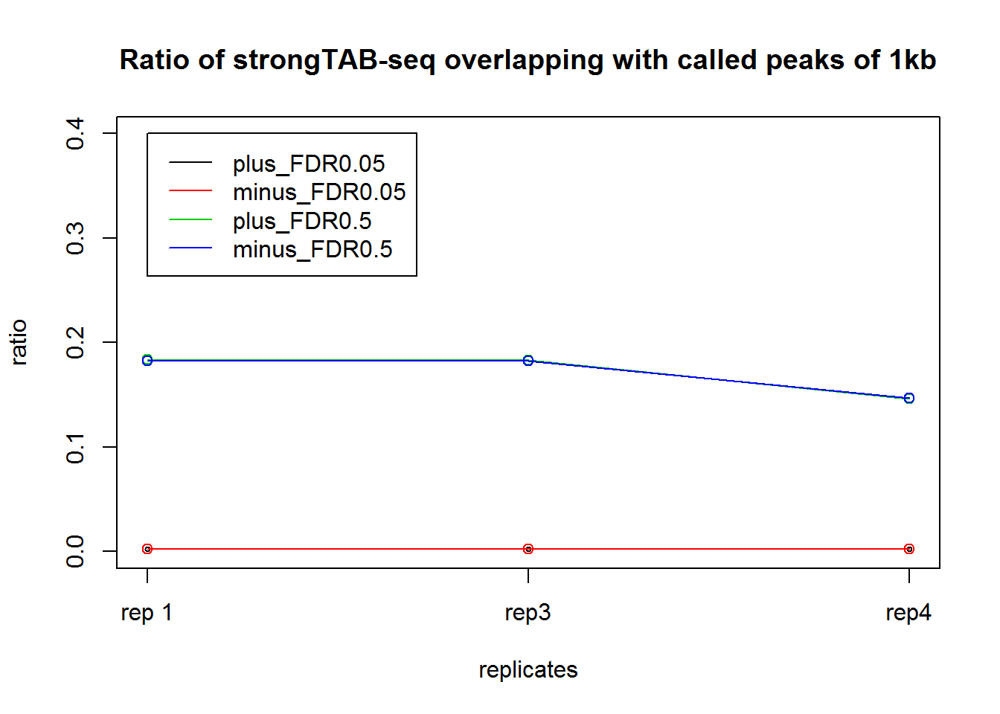
Session information
sessionInfo()R version 3.2.2 (2015-08-14)
Platform: x86_64-w64-mingw32/x64 (64-bit)
Running under: Windows 7 x64 (build 7601) Service Pack 1
locale:
[1] LC_COLLATE=English_United States.1252
[2] LC_CTYPE=English_United States.1252
[3] LC_MONETARY=English_United States.1252
[4] LC_NUMERIC=C
[5] LC_TIME=English_United States.1252
attached base packages:
[1] stats graphics grDevices utils datasets methods base
loaded via a namespace (and not attached):
[1] backports_1.0.5 magrittr_1.5 rprojroot_1.2 tools_3.2.2
[5] htmltools_0.3.5 yaml_2.1.14 Rcpp_0.12.1 stringi_0.5-5
[9] rmarkdown_1.3 knitr_1.15.1 git2r_0.18.0 stringr_1.2.0
[13] digest_0.6.8 evaluate_0.10 This R Markdown site was created with workflowr